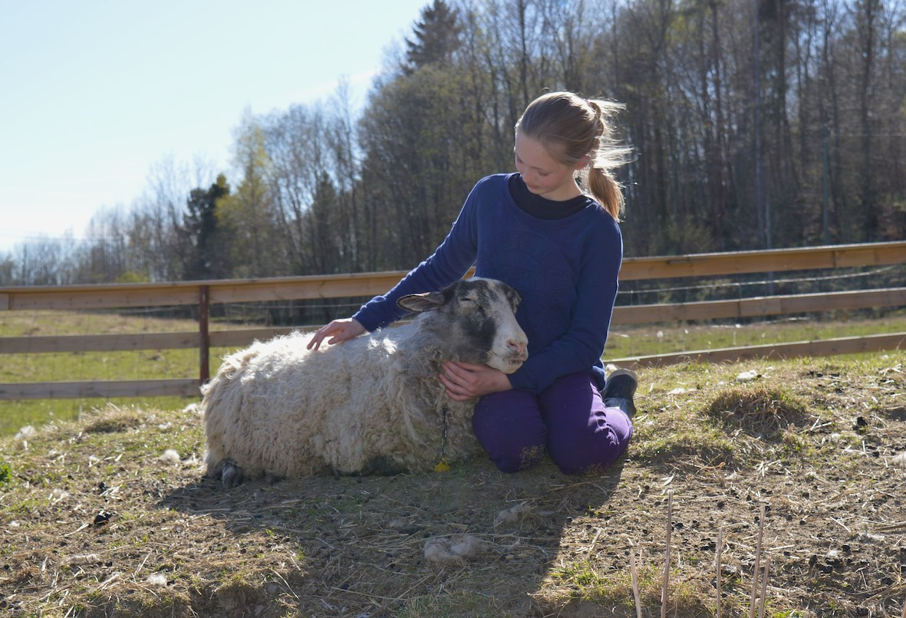
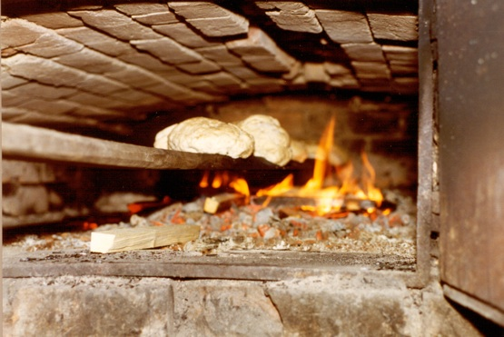
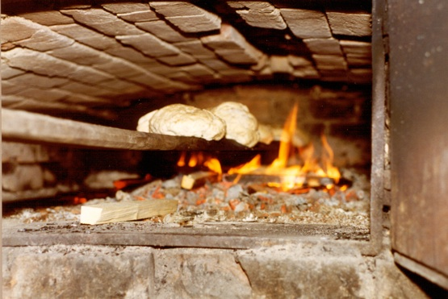

Program som kan bestilles av Aarholt-tunet
Aarholt-tunet har mye forskjellig program å kunne tilby. Gjerne tilpasset ønsker og behov fra gruppa. Nedenfor er først noen beskrivelser - så kommer eksempler punktvis satt opp. Priser finner du i venstremenyen under "priser".
Teambuilding – Gruppebygging.
Både voksne og ungdom vil ha stor nytte og glede av gruppebyggende aktivitet. Lek – for lekens skyld, eller også lek med undertoner som det går an å evaluere gruppas egne opplevelser gjennom.
Særlig i en kurs-sammenheng vil team-aktiviteter på gårdstunet virke sammenspleisende på gruppa. Noen av oppgavene er slik at noen må tørre å komme med løsningsforsøk, selv om det måtte være feil, for at andre skal komme på den rette løsningen. Og det gir gruppefellesskap på en ny måte. Avhengighet av hverandre i stedet for konkurranse.
Teamaktivitetene er svært forskjellige. De er ikke modighetsøvelser. Derimot kreves tankeløsninger og fantasi. Andre oppgaver krever at noen tar lederansvaret og initiativet. Atter andre krever samordning for at gruppa skal klare løsningene.
{kind=link}
Powerløypa - Egenmestring.
Der hvor "teambuildings-løypa" har et mer gruppesammenspleisende preg, har vi også laget en mer individuell løype hvor det kreves litt modighet. Man blir utfordret, får et lite adrenalinkick, trenes i ballanse osv. (Se bilde til høyre av jenta 6 meter over bakken.)
Gevinsten for den enkelte er meget stor. Gleden ved å stå på toppen av et vaklende bruskassetårn eller ha kommet seg over Burmabrua er meget synlig. "Yes.....". Og vi ser at barn og ungdom vokser flere centimeter i løpet av disse aktivitetene. De blir større - inni seg. De gjør ting de ikke trodde de turde og har fått bedre selvtillit. De ser på seg selv med nye øyne og er klare for nye oppgaver og mestringer! De har lært å sette seg nye mål.
Powerløypa egner seg utmerket godt til ungdomsarrangement, klassetur, konfirmantleir, barnegrupper - og er etablert i nærheten av Gjestegården/leirskolen.
{kind=link}
{kind=link}
Eksempler på programaktiviteter:
- Powerløype - består av Burmabru hvor man går på ett tau, og holder seg i et annet 6 meter over bakken (se høyremenyen).
Bruskasseklatring med sikringsutstyr (se bildene over).
Svevebane nesten 150 meter lang.
Ballansering over ei myr på 48 mm. plank. Nevnte aktiviteter tar fra 2-6 timer, avhengig av hvor mange dere er og hvor mange aktiviteter dere velger. - Teamløype. En sammenspleisende aktivitetsløype som får fram kreativitet, samarbeid, moro og utfordringer. Et to timers opplegg med opptil 8 forskjellige stasjoner. To av stasjonene er avbildet under: minerydding , multiski .
- Flåtepadling. Nede i Villmarkstunet renner en elv fra et vann, og vi padler 6 stk. på hver flåte. Om mulig oppover til badeplassen. 3-4 timers aktivitet.
- Dyrestell og kos med dyra. Aarholt-tunet sine gjester får lære både hvordan en leser dyras kropps-språk og hvordan de skal fores og stelles. Både gutter og jenter trives med å få gi omsorg til dyra. 
- Underholdning. Morokveld med allsang, konkurranser og gøy. 1/2 til 1 time.
- Bakerovnsbrød. Det tar 3-4 timer fra vi tenner opp ovnen til brødene spises.
- Klatring på låveveggen med sikringsutstyr. Vi har fire forskjellige klatreruter (se bilde i høyremenyen). Når mange kan klatre samtidig, trenger man ikke så lang tid for en hel gruppe.
- Luftgevær og Pil og Bue. Begge aktivitene kan en få øvelse i.
- Forteller-tur til Fredriklia, til mannen som bodde under jorda på slutten av 1800-tallet. En sølvskatt skal være nedgravd i skogen. En halv til en time inkl. fortelling.

{kind=link}
{kind=link}
{kind=link}
{kind=link}
 

{kind=link}
Program for egenaktivisering, turmuligheter
- Trampoline, fotballbane, volleyball, smashball, - står til disposisjon for gruppene.
- Tarzanløype med broer over en bekk. Dette er også en læringsarena. Her får dere lære, før dere kan bruke den, hvordan de forskjellige broene kan gi deg nye utfordringer, bare ved å øve, eller ved å gjøre noe lydløst, eller i blinde, eller baklengs..... Broene byr på utfordinger for de fleste voksne, men som dere ser på bildet kan små barn få det til hvis de tørr.
Tarzanløypa er inkludert i prisen for de som bestiller kost og losji. - Lommelyktsafari / natursti. - På kvelden går gruppene på sti med refleksbrikker i trærne og lommelykt og løser oppgaver om natur. Inkl. i prisen for de som bestiller kost og losji.
- Badetur til to ferskvann. - Ett av badevannene har en flytende torvøy. Ca et par km. fra gården. Kulerødvannet og Askjemvannet.
{kind=link}